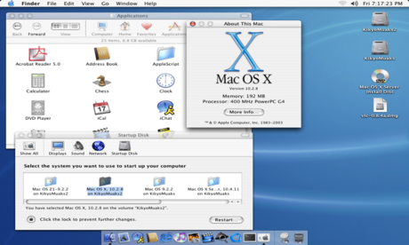

All content and copyrights are from livescience.com and owned by its respective author(s)
The history of computers started over 200 years ago. However the start of the computers was vastly different than the current state of computers. Below is a brief history of computers:
1801: Joseph Marie Jacquard, a French merchant and inventor invents a loom that uses punched wooden cards to automatically weave fabric designs. Early computers would use similar punch cards.
1848: Ada Lovelace, an English mathematician and the daughter of poet Lord Byron, writes the world's first computer program. According to Anna Siffert, a professor of theoretical mathematics at the University of Münster in Germany, Lovelace writes the first program while translating a paper on Babbage's Analytical Engine from French into English. "She also provides her own comments on the text. Her annotations, simply called "notes," turn out to be three times as long as the actual transcript," Siffert wrote in an article for The Max Planck Society. "Lovelace also adds a step-by-step description for computation of Bernoulli numbers with Babbage's machine — basically an algorithm — which, in effect, makes her the world's first computer programmer." Bernoulli numbers are a sequence of rational numbers often used in computation. More Info
Source: Lookfar.com
1936: Alan Turing, a British scientist and mathematician, presents the principle of a universal machine, later called the Turing machine, in a paper called "On Computable Numbers…" according to Chris Bernhardt's book "Turing's Vision" (The MIT Press, 2017). Turing machines are capable of computing anything that is computable. The central concept of the modern computer is based on his ideas. Turing is later involved in the development of the Turing-Welchman Bombe, an electro-mechanical device designed to decipher Nazi codes during World War II, according to the UK's National Museum of Computing.
1945: Two professors at the University of Pennsylvania, John Mauchly and J. Presper Eckert, design and build the Electronic Numerical Integrator and Calculator (ENIAC). The machine is the first "automatic, general-purpose, electronic, decimal, digital computer," according to Edwin D. Reilly's book "Milestones in Computer Science and Information Technology" (Greenwood Press, 2003).
1953: Grace Hopper develops the first computer language, which eventually becomes known as COBOL, which stands for COmmon, Business-Oriented Language according to the National Museum of American History. Hopper is later dubbed the "First Lady of Software" in her posthumous Presidential Medal of Freedom citation. Thomas Johnson Watson Jr., son of IBM CEO Thomas Johnson Watson Sr., conceives the IBM 701 EDPM to help the United Nations keep tabs on Korea during the war.
1976: Steve Jobs and Steve Wozniak co-found Apple Computer on April Fool's Day. They unveil Apple I, the first computer with a single-circuit board and ROM (Read Only Memory), according to MIT.
1981: "Acorn," IBM's first personal computer, is released onto the market at a price point of $1,565, according to IBM. Acorn uses the MS-DOS operating system from Windows. Optional features include a display, printer, two diskette drives, extra memory, a game adapter and more.
2001: Mac OS X, later renamed OS X then simply macOS, is released by Apple as the successor to its standard Mac Operating System. OS X goes through 16 different versions, each with "10" as its title, and the first nine iterations are nicknamed after big cats, with the first being codenamed "Cheetah," TechRadar reported. More Info
Source: wikipedia.org
2009: Microsoft launches Windows 7 on July 22. The new operating system features the ability to pin applications to the taskbar, scatter windows away by shaking another window, easy-to-access jumplists, easier previews of tiles and more, TechRadar reported. More Info